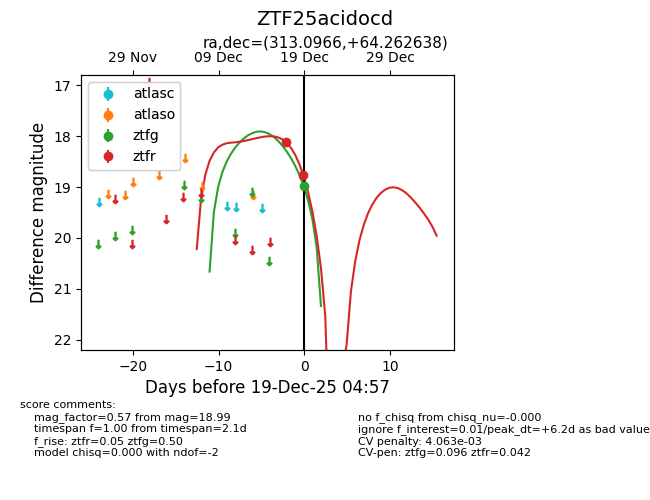
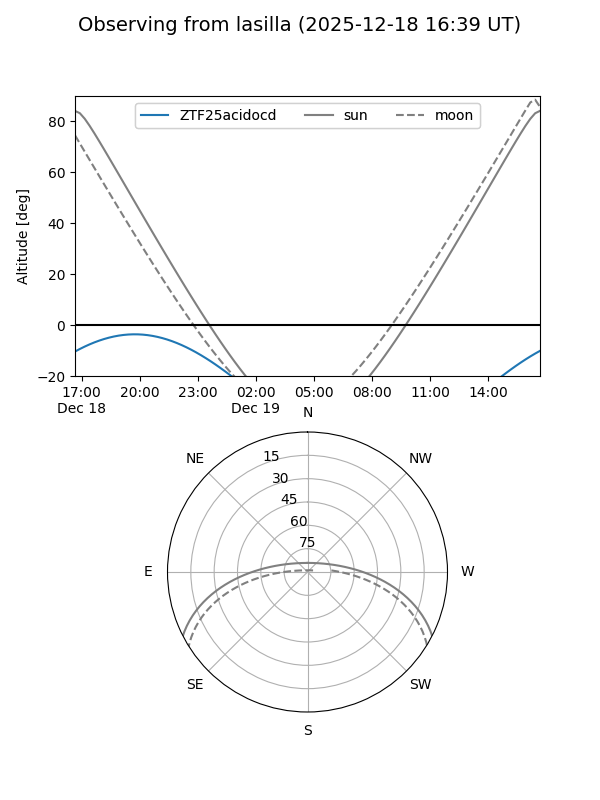
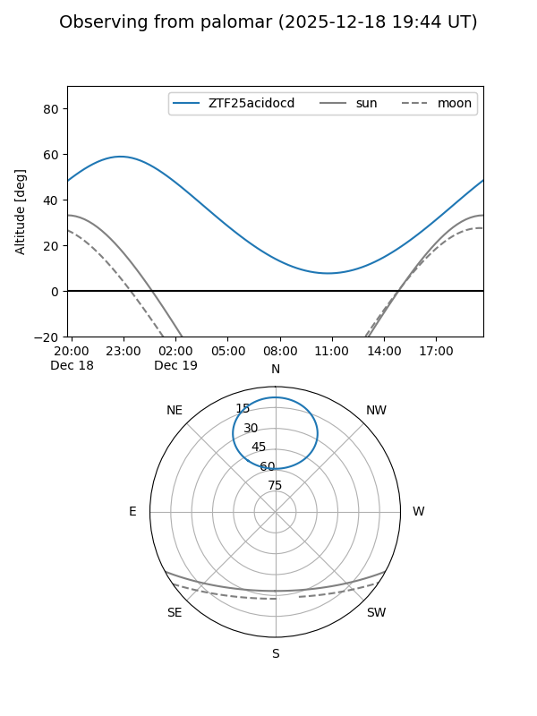

ZTF25acidocd
Target ZTF25acidocd at 2025-12-19 02:47
Aliases and brokers:
FINK: fink-portal.org/ZTF25acidocd
Lasair: lasair-ztf.lsst.ac.uk/objects/ZTF25acidocd
ALeRCE: alerce.online/object/ZTF25acidocd
alt names
ZTF25acidocd (ztf,fink_ztf)
Coordinates:
equatorial (ra, dec) = 313.0966,+64.26264
equatorial (HMS+DMS) = 20:52:23.18,+64:15:45.50
galactic (l, b) = (100.3348,+12.48165)
Flags:
Photometry:
last ztfr=18.76
2 ztfr detections
Lightcurve

Visibility


Additional plots